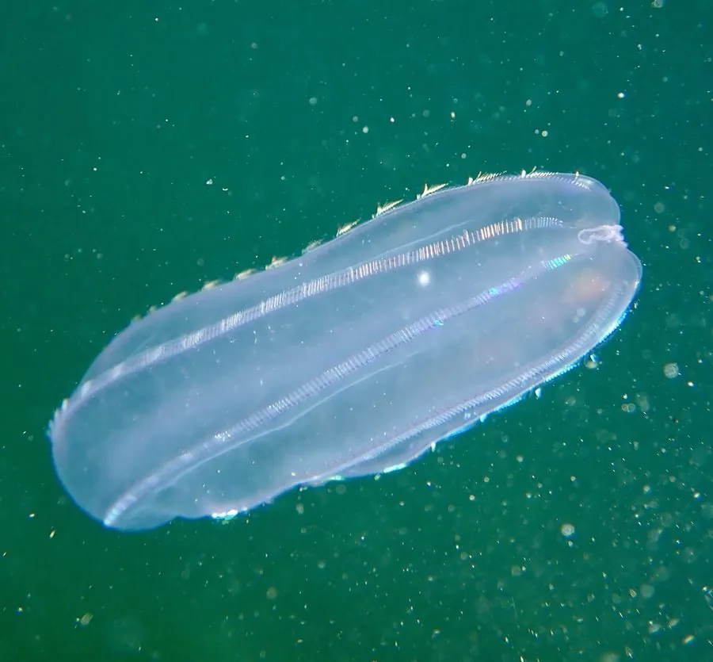

其他无脊椎动物 · 动物界
瓜水母 Beroe cucumis

形似透明小瓜的栉水母，没有触手，靠八列栉板划水前进，专门捕食其他栉水母，是海洋中会发光的捕食者。
- 分类
- 门栉水母动物门纲无触手纲目瓜水母目科瓜水母科属瓜水母属
- 栖息环境
- 温带与寒带近岸和开阔海域的表层至中层水体
- 地理分布
- 北大西洋、北太平洋与北冰洋边缘，中国北方沿海偶见
- 保护级别
- 暂无评估
物种志
瓜水母的身体呈瓜形或袋状，长约10–15厘米，通体透明，常带淡淡的粉红或乳白色，表面有八列纵行的栉板。栉板由一排排纤毛黏合而成，像梳子一样，划动时折射出彩虹般的光泽。它没有触手，前端是一个能张大的口。
瓜水母属于栉水母动物门，和真正的钵水母、水螅水母不是一类，它没有刺细胞，不会蜇人。它是凶猛的捕食者，专吃其他栉水母，比如球栉水母和海醋栗，靠大嘴整个吞下猎物，再用体内的酶消化。瓜水母靠栉板划水缓慢游动，受到刺激时会发出蓝绿色的生物光。它分布在北大西洋、北太平洋和北冰洋边缘的温带、寒带海域，中国北方沿海偶见。近年栉水母在部分海域大量繁殖，捕食鱼卵和幼鱼，对渔业资源造成影响，因此受到生态学家的关注。
形态与习性
- 体型长约10–15厘米，呈瓜形或袋状
- 栉板体表有八列栉板，靠纤毛划水前进
- 食性专吃其他栉水母，用大嘴整个吞下
- 发光受刺激时发出蓝绿色的生物光
- 分类属栉水母动物门，没有刺细胞，不蜇人
- 生态影响大量繁殖时捕食鱼卵和幼鱼
趣味知识
- 它没有触手，靠八列栉板划水慢慢前进。
- 瓜水母专吃其他栉水母，和真正的水母不是一类。
- 它受到刺激会发出蓝绿色的光。